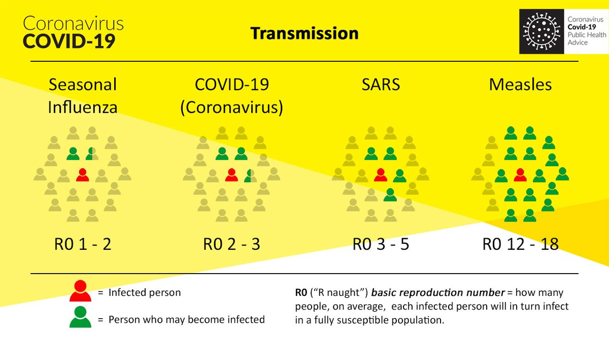

Wash Your Hands
Make sure to wash your hands with soap for 20 seconds before meals and frequently throughout your day to keep sanitized. This is a key factor in preventing disease spread.
Viruses vs Bacteria
Viruses, while typically not as virulent as some bacterial infections, are unable to be combated by antibiotics (hence the name), and are thus harder to treat and contain. They are also more likely to be able to spread via the air.
COVID-19
The Coronavirus is particulairly hard to prevent the spread of due to many of its carriers being asymptomatic (not having symptoms), causing them to not know they are infected and thus not take proper precautionary measures, all the while possibly infecting others.
Disease Spread
In the modern world, disease spread is accelerated by rapid and frequent transit throughtout the entire globe, with city centers being especially susceptable to outbreaks and rampant spreading due to high population density.
Statistics and Metrics

The Numbers and Math
The Most Important Factors in Disease Spread
According to the CDC, R0 (basic reproduction number) is "an epidemiologic metric used to describe the contagiousness or transmissibility of infectious agents." Specifically, this number details the estimated amount of people a person infected with a certain disease will infect in a population. It depends on the contagiousness of the pathogen itself, as well as average societal factors such as whether quarantine or social distancing is implimented. It can also be decreased through increased sanitation, such as everyone washing their hands or wearing masks. As of now, 3.89 Million US citizens have died due to the Coronavirus, emphasising the importance of taking such precautionary measures sooner rather than later.